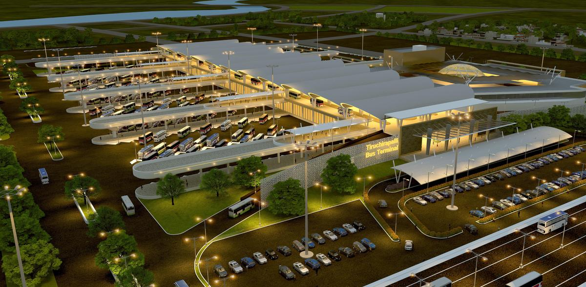

NAMAKKAL
NAMAKKAL BUS STAND

The Namakkal New Bus Stand that was inaugurated by Chief Minister M.K. Stalin a few weeks ago was thrown open to the public on Sunday and buses started using the bus stand.
The Chief Minister inaugurated the new bus stand, constructed at ₹19.50 crore at Mudalaipatti on October 22.Officials of the Tamil Nadu State Transport Corporation (TNSTC) said that all the mofussil buses were operated from the new bus stand. A digital board displayed at the bus stand had details of the arrival and departure of buses.
For the benefit of passengers, bus shelters would come up on Anna Road, Coastal Road, and Vallipuram Road. A few shops in the bus stand were also opened on Sunday.
All town buses plying between Old Bus Stand and Rasipuram would enter the new bus stand. Between the old bus stand and the new bus stand, a government or private bus was operated every 10 minutes and the fare was ₹7 in town and mofussil buses and ₹10 in express buses.